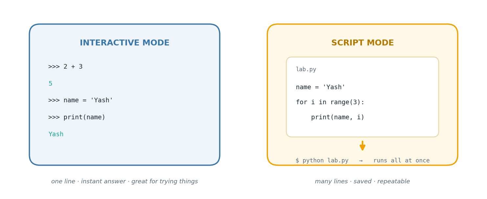

The big idea
Before Python can do anything interesting, two things have to be true: the interpreter has to be installed, and you have to know how you are talking to it. Those sound like trivia, but they shape everything that follows.
Python is an interpreted language. There is no separate "build" step that turns your file into an application — instead, a program called the interpreter reads your code and carries out each instruction as it encounters it. That single design decision is why Python feels so immediate: you can type an expression and get an answer back before you have finished your coffee.
That immediacy comes in two flavours. In interactive mode you get a prompt (>>>), you type one
statement, and Python answers straight away. It is a conversation. In script mode you write your
statements into a .py file and hand the whole file over at once. It is a letter rather than a
conversation — slower to get feedback, but the work is saved, repeatable, and shareable.
Beginners often treat these as competing options. They are not. Experienced programmers move between them constantly: prototype a tricky line interactively, then paste the version that works into the script. This first experiment gets you comfortable with both.

How it works
Values, names, and the assignment operator
A value is a piece of data — the number 42, the text "Python", the truth value True.
A variable is a name that refers to a value. In Python the = sign performs assignment,
not mathematical equality:
count = 10 # "let the name count refer to the value 10"
count = count + 1 # perfectly sensible as assignment; nonsense as algebra
Python figures out the type for you — you never declare int count. This is called dynamic typing.
The type belongs to the value, not to the name, which is why a name can be pointed at a number
today and a string tomorrow.
The five types you meet first
| Type | Example | What it holds |
|---|---|---|
int |
42 |
whole numbers, no size limit in Python |
float |
2.718 |
numbers with a decimal point |
str |
"Python" |
text, in single or double quotes |
bool |
True / False |
one of exactly two truth values |
list |
[10, 20, 30] |
an ordered, changeable collection |
Getting text onto the screen
print() is a function — a named piece of behaviour you call by putting parentheses after it.
Give it several values separated by commas and it prints them with a space between each.
Special characters inside strings are written with a backslash: \n starts a new line, \t inserts
a tab, and \\ means "an actual backslash". This is why a Windows path or a date written with
backslashes needs care.
The most readable way to build a sentence out of variables is the f-string — put f before the
opening quote and wrap any expression in braces:
print(f"{first} ({alias}) {last}")
The tasks
Everything above was theory. What follows is the lab work — each task stated, explained, then solved with code that really ran.
Task 1
Task 1 — Interactive Mode vs. Script Mode
Interactive (REPL) mode: you type one line, hit Enter, and Python answers immediately — great for testing a quick idea.
Script mode: you write a .py file with many lines and run the whole thing
in one go — better once a program grows beyond a few lines.
The cell below simply confirms the interpreter is alive and reports its version, the way you'd sanity-check any fresh install.
import sys, platform print("Interpreter check ->", platform.python_implementation()) print("Version string ->", sys.version.split()[0]) print("Ready to code.")
Interpreter check -> CPython Version string -> 3.12.3 Ready to code.
Task 2
Task 2 — Printing Strings in Different Shapes
Same word, four different presentations: a single line, two separate lines, one line broken by a newline character, and a line containing an escaped backslash (dates are a classic place this trips people up).
# (a) one clean line print("Greetings, everyone !!!") # (b) two separate print calls print("Hello") print("World") # (c) a single string holding an embedded newline print("Hello\nWorld") # (d) escaping a backslash inside a date string print("Rohit's date of birth is 12\\05\\1999")
Greetings, everyone !!! Hello World Hello World Rohit's date of birth is 12\05\1999
Task 3
Task 3 — A String Variable Round-Trip
Store a word in a variable, then hand it straight to print.
greeting_word = "Hello" print(greeting_word)
Hello
Task 4
Task 4 — Sampling Python's Built-in Data Types
Five different kinds of values, one line each, so the type diversity is visible at a glance.
whole_number = 42 decimal_number = 2.718 word = "Python" flag = False basket = [10, 20, 30] print("int ->", whole_number) print("float ->", decimal_number) print("str ->", word) print("bool ->", flag) print("list ->", basket)
int -> 42 float -> 2.718 str -> Python bool -> False list -> [10, 20, 30]
Task 5
Task 5 — Building a Full Name from Two Pieces
Two variables hold a given name and a family name; string concatenation joins them with a space in between.
given_name = "Arjun" family_name = "Kapoor" combined = given_name + " " + family_name print("Full Name:", combined)
Full Name: Arjun Kapoor
Task 6
Task 6 — Name, Nickname, Surname in One Line
Format target: FirstName (Nickname) LastName, built here with an f-string.
first = "Abraham" last = "Lincoln" alias = "Honest Abe" print(f"{first} ({alias}) {last}")
Abraham (Honest Abe) Lincoln
Task 7
Task 7 — A Personal Details Card
A small "identity card" printed field by field — swap in your own details and re-run.
student_name = "PRIYA MEHTA" sap_number = "500071122" birth_date = "04 Feb 2000" addr_line_one = "UPES" addr_line_two = "Bidholi Campus" postal_code = "248007" degree_program = "Data Science" current_sem = 2 card = { "NAME": student_name, "SAP ID": sap_number, "DATE OF BIRTH": birth_date, "Pincode": postal_code, "Programme": degree_program, "Semester": current_sem, } print("ADDRESS:", addr_line_one) print(addr_line_two) for label, value in card.items(): print(f"{label}: {value}")
ADDRESS: UPES Bidholi Campus NAME: PRIYA MEHTA SAP ID: 500071122 DATE OF BIRTH: 04 Feb 2000 Pincode: 248007 Programme: Data Science Semester: 2
Common pitfalls
= when you mean === assigns a value; == asks whether two values are equal. Mixing them up is the single most common beginner bug.print(Hello) looks for a variable named Hello and fails. print("Hello") prints the word."12\05\1999" — Python reads \0 as an escape code. Write \\ for a literal backslash, or use a raw string r"...".print returns somethingprint() displays a value and returns None. x = print(5) leaves x empty.